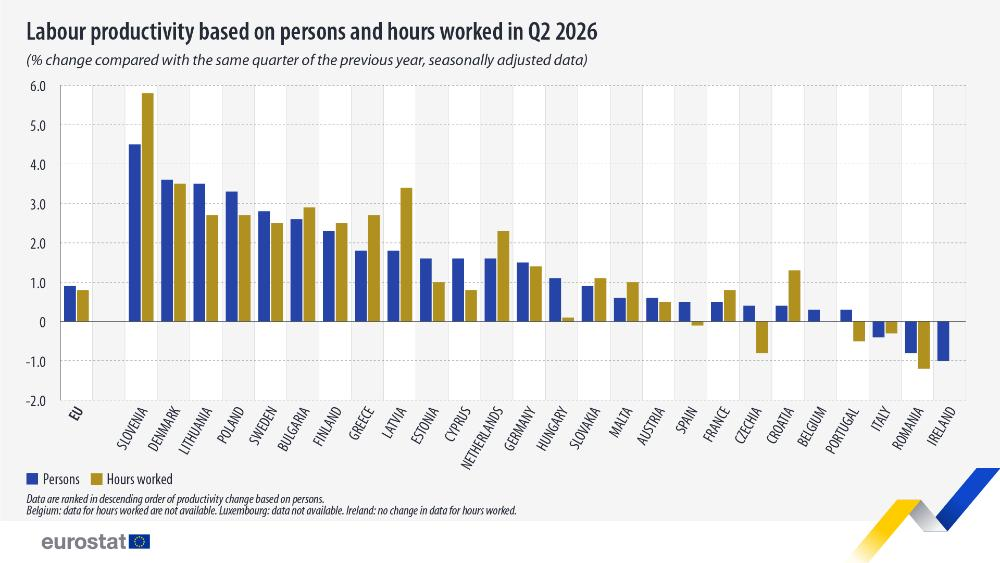

In Italia la produttività del lavoro cala nel 2026, mentre in quasi tutta Europa cresce
Una breve nota per guardare ai dati Eurostat sulla produttività del lavoro: CrescitaZero è il tema del momento oggi.

Una breve nota aggiuntiva rispetto alla programmazione per un commento ai dati pubblicati da Eurostat. La serie continua con la prossima analisi in uscita lunedì 14 settembre.
Eurostat ha pubblicato oggi i dati sulla produttività del lavoro nel secondo trimestre del 2026. Nell'Unione europea la produttività per ora lavorata è cresciuta dello 0,8 per cento rispetto allo stesso trimestre del 2025 e quella per addetto dello 0,9 per cento. In Italia è scesa dello 0,3 per cento per ora lavorata e dello 0,4 per cento per addetto.
Il dato del trimestre conferma una tendenza lunga, perché la produttività oraria italiana è in calo su base annua da quindici trimestri consecutivi, cioè dalla fine del 2022. Nel 2023 anche la Germania perdeva terreno quasi quanto l'Italia, ma da sei trimestri è tornata a crescere, mentre la Francia è in aumento ininterrotto dal 2024.
Tra i paesi grandi la Germania cresce dell'1,4 per cento e la Francia dello 0,8 per cento, mentre la Spagna è ferma. I paesi che corrono di più sono la Slovenia con un aumento del 5,8 per cento e la Danimarca con il 3,5 per cento. Insieme all'Italia perdono terreno solo la Romania, la Repubblica Ceca e il Portogallo.
Anche il confronto con gli Stati Uniti va nella stessa direzione. Secondo il Bureau of Labor Statistics, nel secondo trimestre del 2026 la produttività del settore privato americano è cresciuta del 2,2 per cento su base annua, quasi tre volte la media europea. La produzione è aumentata del 2,5 per cento con ore lavorate quasi ferme, cioè gli americani producono di più senza lavorare di più.
Semplificando, un paese può crescere aumentando le ore lavorate oppure diventando più bravo a produrre nello stesso tempo. L'Italia negli ultimi anni ha fatto solo la prima cosa, con l'occupazione ai massimi storici e il prodotto per ora lavorata che arretra. È il motivo per cui abbiamo iniziato CrescitaZero, la serie di approfondimenti per capire perché in Italia non si cresce più. I dati di oggi dicono che il problema resta tutto lì.